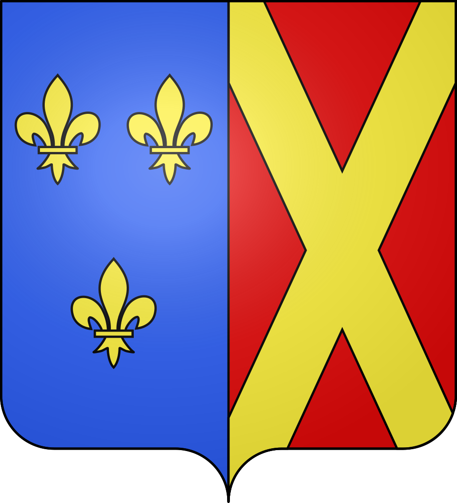

Villeneuve-lès-AvignonFace au Palais des Papes


⟹ Chartreuse · Fort Saint-André · Cardinaux ⟸

Le territoire de Villeneuve-lès-Avignon s'inscrit dans la vallée du Rhône, grand axe de circulation depuis l'Antiquité entre le monde méditerranéen et l'intérieur des terres gauloises puis françaises, corridor commercial et militaire dont l'importance stratégique n'a cessé de façonner l'histoire des villes et bourgs installés sur ses rives.
Une abbaye bénédictine à l'origine du site. Bien avant la fondation de la ville, une abbaye bénédictine s'installe dès le Xe siècle sur les hauteurs du mont Andaon, dominant le Rhône et la plaine avignonnaise. Ce monastère, berceau du futur bourg de Saint-André, donne son nom à toute une colline qui deviendra, des siècles plus tard, le cœur du dispositif défensif royal face à la papauté.
Une frontière face à la papauté d'Avignon. Lorsque les papes s'installent à Avignon au XIVe siècle, alors terre pontificale, le roi de France affirme sa présence sur la rive opposée du Rhône, à Villeneuve, qui devient une sorte de vitrine du pouvoir royal face à la puissance pontificale. La ville elle-même est officiellement fondée par une charte de Philippe le Bel datée du 12 mars 1293, bien avant l'installation de la papauté, marquant d'emblée la volonté du roi de fortifier durablement sa frontière méridionale face au Comtat Venaissin.
La tour Philippe le Bel et le pont Saint-Bénézet. Édifiée dès 1292 pour surveiller et défendre l'extrémité du célèbre pont Saint-Bénézet, la tour Philippe le Bel matérialise cette frontière entre royaume de France et terres pontificales, symboliquement marquée par le fleuve ; son sommet offre aujourd'hui encore un panorama exceptionnel sur Avignon, le palais des Papes et le Mont Ventoux.
Le fleuve, aussi précieux que redoutable, impose sa loi aux riverains : crues violentes, changements de lit et bancs de sable mouvants rendent la navigation périlleuse, tandis que le halage à contre-courant exige un travail harassant, longtemps assuré par des équipes d'hommes ou d'animaux de trait qui tiraient les gabarres chargées de marchandises depuis les chemins de halage aménagés sur les berges.

La Chartreuse du Val de Bénédiction. Fondée en 1356 par le pape Innocent VI, ancien palais qu'il fait entièrement reconvertir en monastère cartusien, la Chartreuse du Val de Bénédiction devient l'une des plus vastes et des plus riches chartreuses de France, résidence privilégiée de nombreux cardinaux et dignitaires ecclésiastiques attirés par la proximité d'Avignon tout en demeurant en territoire royal. De 1305 à 1376, tandis que la papauté siège à Avignon, nombre de cardinaux font ainsi édifier à Villeneuve de somptueuses résidences, dites « livrées cardinalices », dont subsistent aujourd'hui plusieurs vestiges remarquables.
Le fort Saint-André, symbole du pouvoir royal. Sur la colline dominant la ville, le fort Saint-André, projet initié dès 1292 par Philippe le Bel et achevé en 1362 sous le règne de Jean le Bon, avec sa double tour d'entrée fortifiée, matérialise avec force la présence du pouvoir capétien face à la papauté avignonnaise, tandis que l'abbaye bénédictine qu'il enferme au sein de son enceinte témoigne d'une occupation religieuse bien plus ancienne, remontant au Xe siècle. Construit à la même époque que les remparts d'Avignon eux-mêmes, ce dispositif militaire complet protégeait aussi bien l'abbaye que le bourg attenant de Saint-André.
L'installation de la papauté à Avignon au XIVe siècle transforme profondément la vallée du Rhône gardoise, dont plusieurs villes et bourgs deviennent des dépendances, des résidences ou des points d'appui du pouvoir pontifical, tandis que le grand commerce fluvial, denrées agricoles, vins, bois et matières premières, continue de transiter par le fleuve entre Lyon et la Méditerranée.
Le XXe siècle transforme la vallée du Rhône gardoise avec l'aménagement hydroélectrique et nucléaire du fleuve, notamment le site de Marcoule près de Bagnols-sur-Cèze, qui bouleverse l'économie régionale, tandis que le vignoble de Côtes-du-Rhône, replanté après la crise du phylloxéra qui ravage l'ensemble du vignoble français à la fin du XIXe siècle, continue de structurer le paysage et l'identité agricole des coteaux.

Aujourd'hui, Villeneuve-lès-Avignon conserve une identité marquée par ce passé : cité royale française face à la papauté d'avignon, la commune s'inscrit pleinement dans la zone Vallée du Rhône, entre mémoire patrimoniale et vie locale contemporaine. Cette continuité, entre héritage et vie quotidienne, fait aujourd'hui tout l'intérêt d'une visite attentive à l'histoire du lieu.
Villeneuve-lès-Avignon a longtemps regardé, depuis sa rive du Rhône, la puissance pontificale d'Avignon : une position de vis-à-vis qui a valu à la ville chartreuse, forteresse et hôtels de cardinaux.
Synthèse historique — L'Âme des Régions